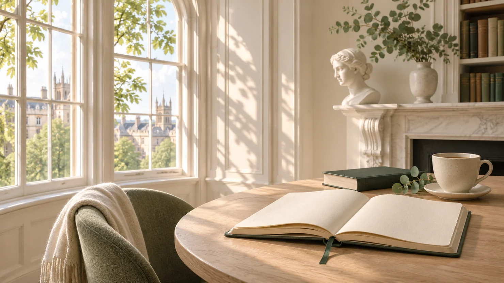
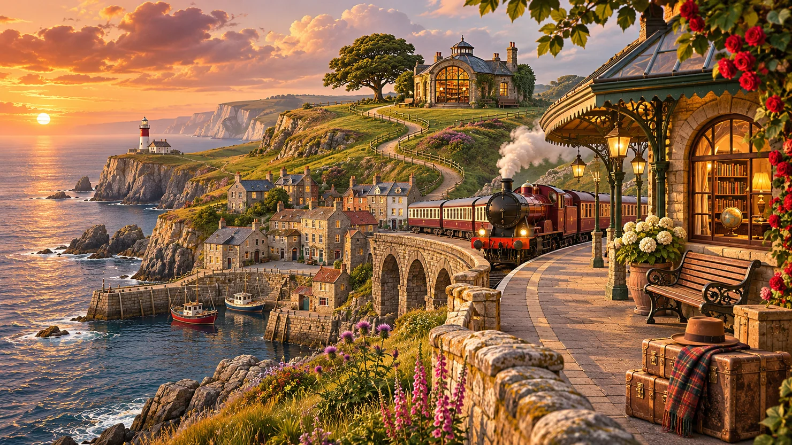
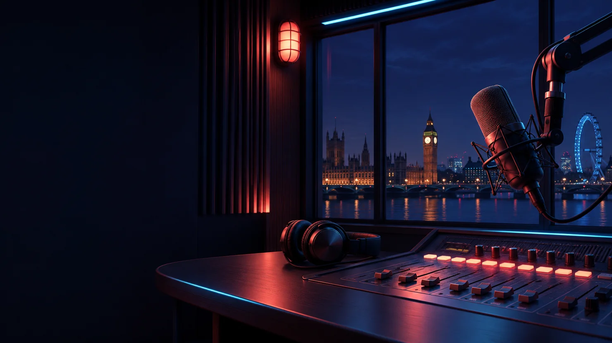

01 · Una lección
Enfocado
Una recomendación al entrar. Abre tu siguiente lección en un clic y deja el resto para cuando lo necesites.
Inglés · Laboratorio de diseño
Abre tu siguiente lección, continúa un mapa de misiones o ve directamente a la destreza que te interesa.

Una recomendación al entrar. Abre tu siguiente lección en un clic y deja el resto para cuando lo necesites.

Una aventura por la costa inglesa con la próxima misión, las paradas cercanas y un mapa vertical de progreso.

Entra en Speaking, Writing o Listening desde el inicio. Menú lateral en ordenador y barra inferior en móvil.
Elige una vista para ver los tres diseños juntos. Pulsa una captura para ampliarla.
Las vistas navegables usan una cuenta ficticia. El progreso de prueba se guarda mientras el comparador esté abierto.
| Pantalla | Enfocado | Ruta | Directo |
|---|